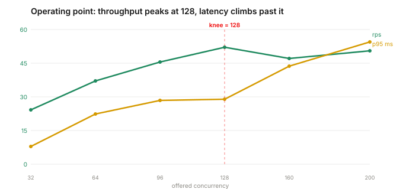
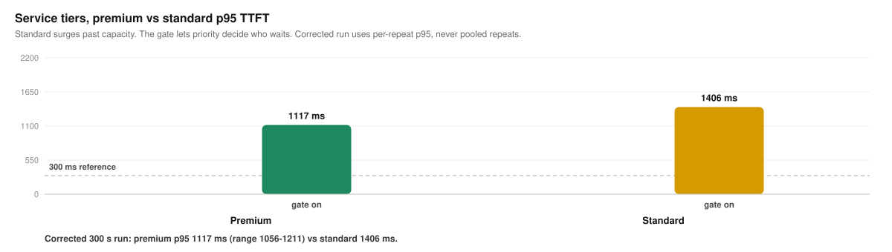
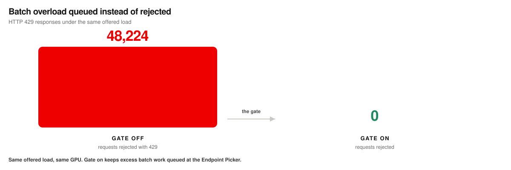
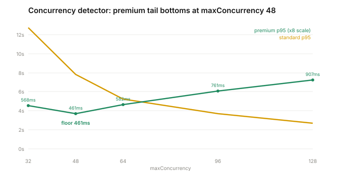

How we got the numbers,
one pass at a time.
The README shows the results at a glance. This is the longer story: what we tested, in the order we tested it, where a measurement turned out to be measuring the wrong thing, and how the campaign landed on numbers that survive scrutiny.
Flow control is a queueing policy. The whole job is making queue behavior visible and honest, so the discipline that runs through every chapter is the same one: verify what the metric is actually reporting before trusting the latency it produces.
Check the cluster before trusting any prior number
The first move was to read the deployed state instead of the plan's assumptions. Automatic prefix caching was on, at a 96.9% hit rate. That single fact invalidated the earlier headline latencies. A premium median near 41 ms was a cache result, not a scheduling result. The benchmark was measuring a warm cache and calling it flow control.
So the pool got rebuilt for an honest measurement. Prefix caching off everywhere, and a fresh prompt pool where every prompt carries a unique head and body behind a short shared preamble. From then on every run records a near-zero hit rate as proof the cache is not doing the work.
Sweep to the knee, don't guess it
A queueing policy has nothing to do until the pool is full, so every scenario has to run at saturation. To find where this pool saturates, a single tenant was swept from 32 to 200 concurrent requests, with prefix caching off, over two passes in randomized order.
Throughput peaked at 128 concurrent and fell past it. At that point vLLM's running batch pins at its 128 limit and a real queue forms behind it. The two passes agreed. An earlier guess of ~175 turned out to be a prefix-cache artifact, cheap cached prefill inflating apparent capacity, and it went away once the cache was off.

One run is not a result
With the operating point set, the campaign ran a matrix: four scenarios that each isolate a different question, the gate on and off, three output lengths, and three counted repeats of every cell. Repeats are not decoration. Run-to-run variance is real, and a single pass can land anywhere in it, so a cell only counts when three 120-second repeats agree.
- Service tiers — premium, standard, and batch contend for a saturated pool. Does priority decide who waits?
- Batch isolation — a deferrable batch tenant floods the pool. Is overflow queued or rejected?
- Consolidation — two premium tenants share a GPU while a standard tenant floods it. Do the interactive tenants keep their place?
- Same-band fairness — a greedy tenant bursts against equal-priority peers. What does fairness actually bound?
The gate ran, but had nothing to prioritize
For a stretch of the campaign the tier results refused to separate. Gate-on looked identical to gate-off, which is exactly the symptom you would see if the gate were doing nothing. The gate was on. The problem was upstream of it.
A request carries an objective name in a header. The Endpoint Picker resolves that name to an InferenceObjective bound to the pool, and that objective supplies the integer priority the gate sorts by. The tenants were being sent to inference pools with no objectives bound, so every request resolved to priority 0. The gate opened and closed correctly, but with one flat band there was nothing to order. Premium and standard sat in the same band.
It was caught by reading the priority the flow-control queue metric reported, not the client latency. Premium and standard were sharing one band. The fix was to bind objectives per pool, and from that point every gate-on run preflights that premium resolves to priority 100 or the run aborts. The seventeen affected runs were archived, not deleted, and re-run.
Priority keeps premium's turn under a surge
With premium verified at priority 100, the result the campaign was built to find appears. Under a standard surge past capacity, the premium p95 time to first token holds inside a 300 ms interactive objective while standard absorbs the wait it created.
The published chart, drawn from the counted repeats:

| tier | p50 off | p95 off | p50 on | p95 on |
|---|---|---|---|---|
| premium | 176 | 1778 | 82 | 251 |
| standard | 589 | 2054 | 155 | 691 |
Overload is queued, not rejected
When a deferrable batch tenant floods the saturated pool, the difference is stark and load-independent. Without the gate, the server sheds the overflow and returns HTTP 429 to the application. With the gate on, batch is queued behind the interactive tiers and nothing is rejected. Served throughput is nearly the same in both arms. What changes is who handles the overflow.

Consolidation holds the line; fairness marks its edge
Two more scenarios fill in what the policy does and where its leverage ends.
Consolidation. Two premium tenants share one GPU while a standard tenant ramps in and pushes the pool to a full batch. With the gate on, premium p95 TTFT held at 795 ms against standard at 1062 ms. The shared pool ran hot and the interactive tenants kept their place in line, which is the whole reason to consolidate onto one GPU in the first place.
Same-band fairness. Three tenants ran at the same priority, and one burst to several times the load of the other two. Fairness bounds the greedy tenant's share of the pool, so it takes its turn instead of monopolizing dispatch. It does not lower a peer's tail latency, because all three sit in one band and compete for the same running batch. Fairness bounds throughput inside a band; it does not create a latency tier inside one.
A separation control, not a latency-SLO control
Every result above uses the shipped utilization detector, which gates on vLLM queue depth. An alternative concurrency detector from upstream llm-d caps in-flight concurrency directly, so it was swept to see whether any setting could hold premium under 300 ms at a saturating load. Its maxConcurrency ran from 32 to 128.

Tightening the cap protects premium and starves standard; loosening it converges them. That is a clean separation dial, but no setting reaches a premium p95 under 300 ms at this offered load. Reaching a 300 ms objective under saturation takes headroom or more capacity, not a tighter cap. The concurrency detector separates tiers; it does not lower absolute latency.
| maxConcurrency | running | premium p95 | standard p95 |
|---|---|---|---|
| 32 | 29 | 568 | 12722 |
| 48 | 39 | 461 | 7808 |
| 64 | 46 | 582 | 5207 |
| 96 | 61 | 761 | 3714 |
| 128 | 70 | 907 | 2697 |
What the numbers are, and what carries
Every run above is a single replica on one H100, so the absolute latencies track that hardware and tuning. Cross-pod scoring was not the subject; what is measured is priority admission control on one pool. A two-replica pass reproduced the tier result with premium p95 TTFT at 177 ms, so the behavior transfers even though the number moves.
The pattern is the finding, not the absolute numbers. Premium held its objective through a surge it did not cause, deferrable work waited instead of failing, and the concurrency dial separates tiers without lowering the floor. On different hardware the latencies move and the behavior stays.